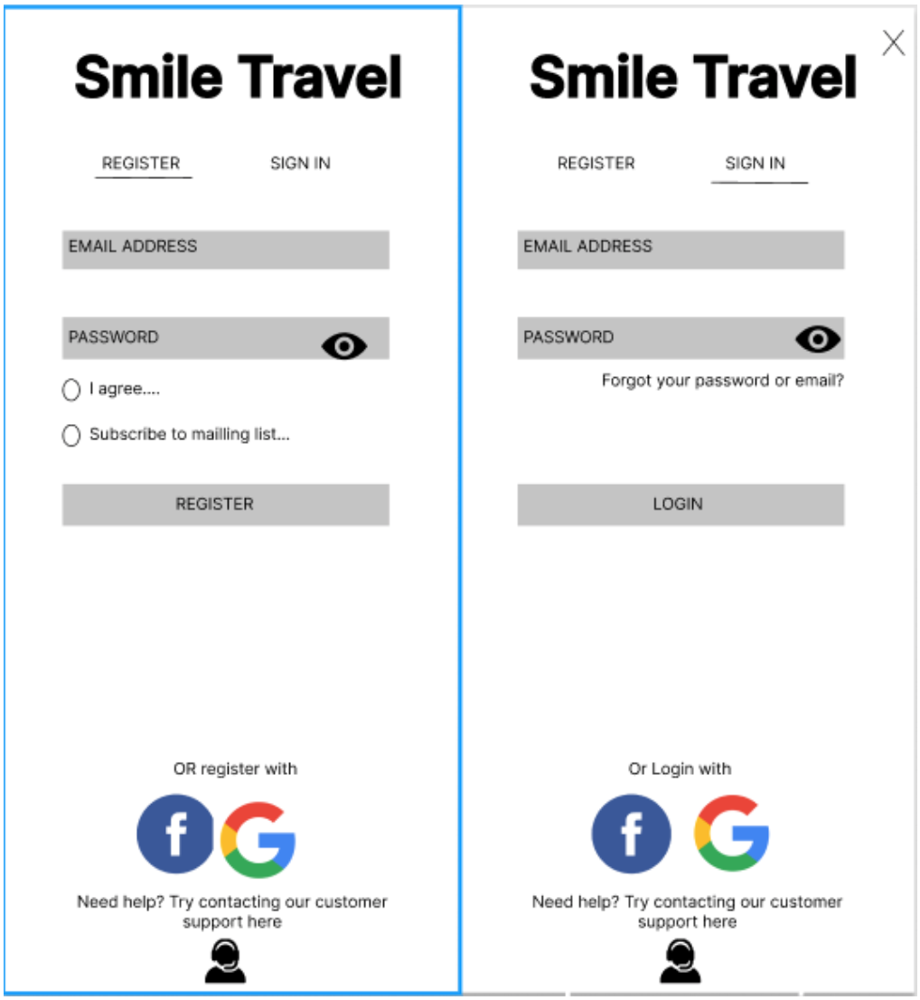
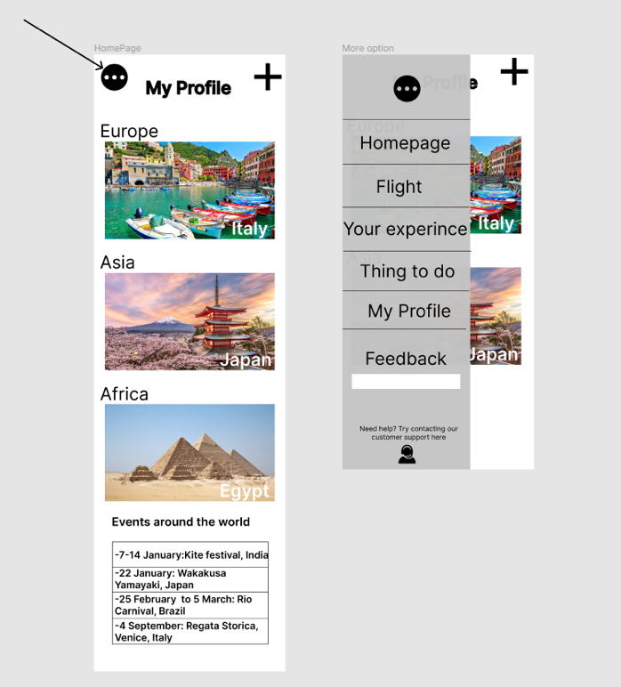
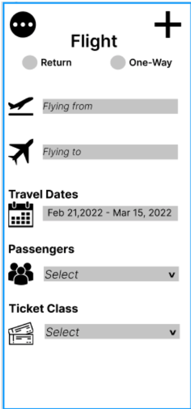
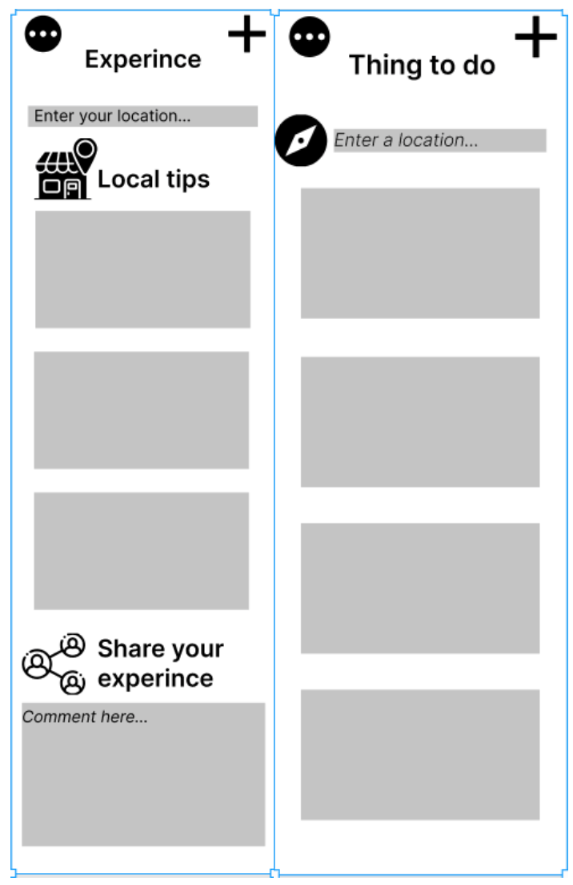

Plans and Progress
Week 1
We decided to make a travel guide application, where it can help beginner traveller or making the process of planning the trip easier. The first step we need to do is to decide on a name for our app. Originally, we wanted our app to be called “Travel Guide”, but with some more thinking it was a very basic name and doesn’t have any meaning behind it so in the end we all agreed on Smile Travel. The idea behind the name is that, when someone is travelling, we don’t them stress over the little things such as which place to visit, where is there accommodation or how much is the flight tickets, hence the name Smile Travel where we will have everything under one application and easy for people to navigate through the application.
In the previous assignment, one of team members Tommy have made a rough sketch of what he wanted the application going to look like. On the right side is the homepage where it will include different pictures of places around the world in the middle and at the bottom will be the events that is happening around the world. When the user clicks on the top left icon it shows them the different section that they can look at. When they are ready to plan their trip, they would click on the plus button on the top right. This rough sketch will be the blueprint for our apps and help us the build the prototype. However, before building the prototype we need to build a wireframe and hopefully this can be done in week 2.


Plans and Progress
Week 2
In week 2 we used Figma to help us to create our wireframe. It's important to have a wireframe before making our app, because it will give us an opportunity to walk through the structure of the app and give us the visual aspect of what it's going to look like as well. Also, with a wireframe we can also do key-path scenario where we can run fake scenarios of potential problem or thing that a client could run into. This will help us to fix any problem and add in new features. Since is some of us first time using Figma, we were having trouble to make it, but neither less we still manage.
Steps in making Smile Travel wireframe
1.The first step wireframe we made was a sign in and register page.
2. The next part that we made was the homepage, similar to Tommy’s sketch in the homepage we have picture of different places around the world in the middle of the page and in the top left we have an icon, where if the if the user click it will give them different section.
3. When the user is click on the Flight section they will be taken into a new page where they can look at the cheapest tickets that is available to them. On the page the user will be able to choose either a one-way ticket or a return ticket. After they are required to put where they are flying from and flying to. They also required to select a date they want to fly and how many people are going, and the last step is to select the tickets class.
4.In your experience section the user would find other experiences in a certain area they also can share their own experiences.
5.In this section you would find activities to do in a certain area. This can be done after a user input their desired location.
6.In the last section we allow user to customise their profile and details, such as profile pictures, name and their payment methods.
After the wireframe was mostly completed, Claire got started making the prototype. As it was nearing the end on week 2 by the time the wireframes were ready, only around 3 screens were made of the prototype this week. It was also slow as the program ‘proto.io’ was new to Claire so everything took a little longer as she needed to find things.
Plans and Progress
Week 3
Early in this week, the prototype was mostly completed except for the ‘plan your journey’ portion which Tommy would do. Also, early this week, using information from assignment 1, Oliver has completed the team profile which included paragraphs about each person’s background, hobbies, IT interest and IT experience. Oliver has also completed the careers plan section, comparing each group member’s career plans by compiling information from assignment 2. In this week, Andy and Oliver worked on the Key path scenarios using the wireframes that Claire and Tommy created. The key paths scenarios that they made were for booking a trip, cancelling a trip and writing a review.
Plans and Progress
Week 4
During this week we completed most of the description portions of the assignment. Claire completed the overview and testing, Matthew did many parts, including the timeframe, group processes and communication, skills, and jobs, as well as doing his role of project manager by updating everyone on what was still to be done. Oliver did scope and limits as well as completing the team profile. Claire and Tommy worked on completing the prototype, but unfortunately when they were extremely near the end of the prototype the free trial of proto.io ran out. This scared everyone in the group as if we didn’t update our plan our prototype would be pretty much deleted. Ultimately the group made the decision to pay for a premium plan of proto.io and sharing the cost, and the prototype was finished. At the end of the week, we added final touches to many parts of the assignment and Claire was responsible for collating all the parts into both the website and PDF versions of the report.